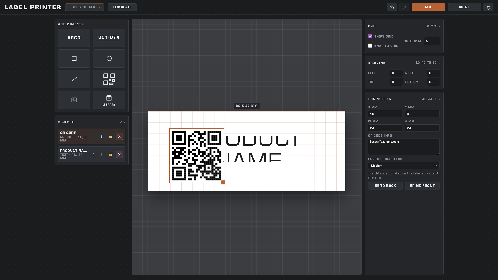
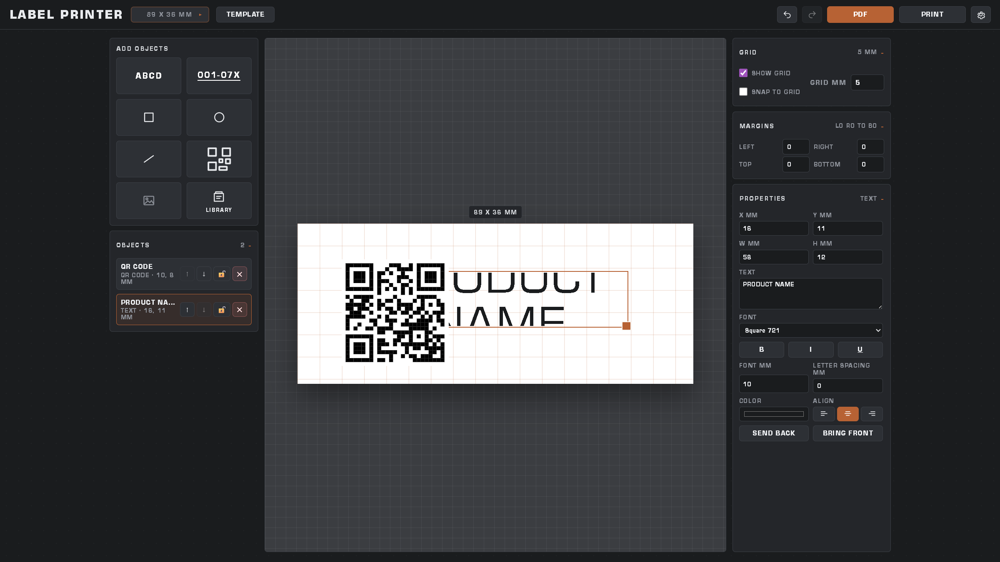
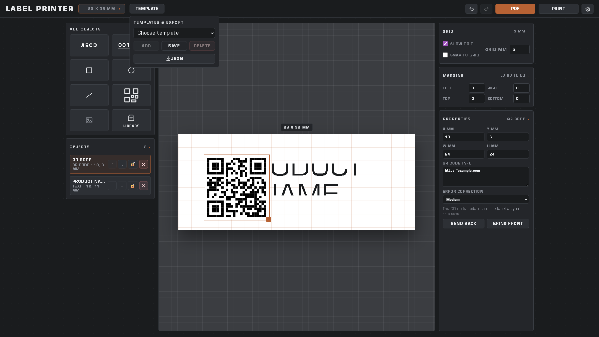
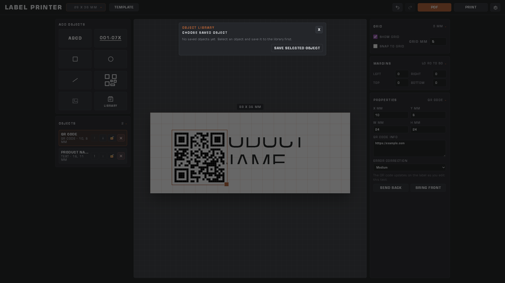
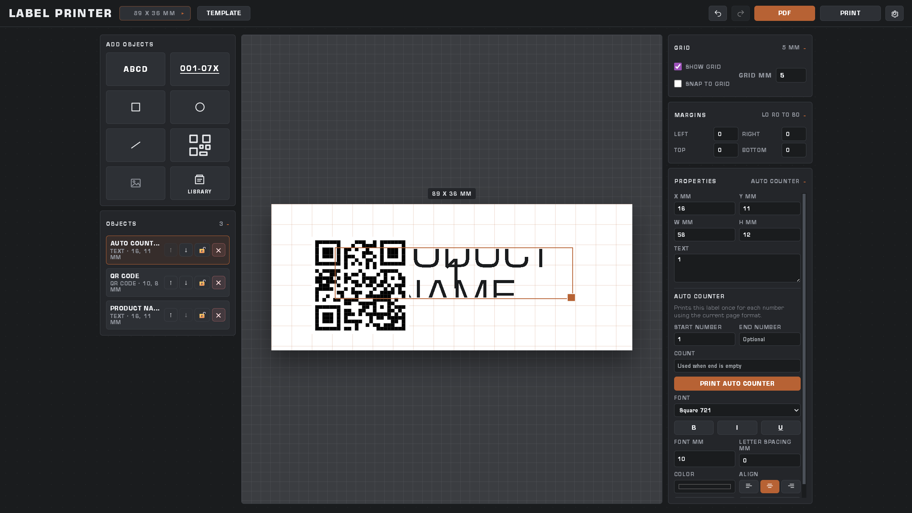
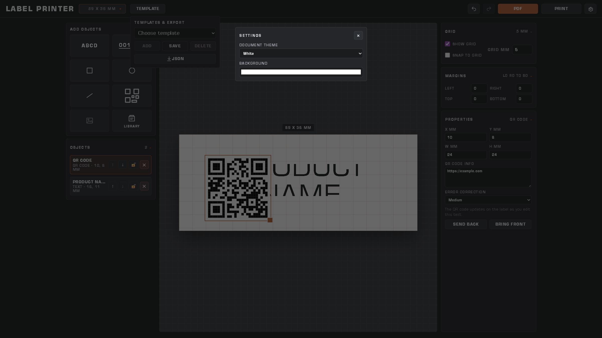

Design millimeter-accurate labels with text, shapes, images, and QR codes,
then export PDF or print — including sequential auto-counter runs.
1. Workspace overview
The Label Printer workspace has four areas: the header (size, templates, export),
the left sidebar (add objects + layer list), the center canvas (your label),
and the right inspector (grid, margins, properties).

Main workspace: tools on the left, label canvas in the center, properties on the right.
Use PDF or Print in the top-right when you are ready to output.
2. Getting started
Open the app in a browser (npm run dev) or the desktop build.
Choose a label size from the size button in the header (for example 89 × 36 mm).
Add objects from the left Add Objects panel — text, shapes, QR, image, or auto counter.
Select an object on the canvas or in the Objects list, then edit it in Properties.
Click PDF to download, or Print to open the system print dialog.
Tip: All positions and sizes use millimeters so printed output matches your physical label stock.
3. Label size & presets
Click the size button (for example 89 × 36 mm) to pick a saved preset
or open the preset manager to create custom widths and heights.
Label size menu: switch between presets (such as 80×30) or manage your own sizes.
Changing size keeps your objects and clamps them so they stay inside the label.
Use Manage label size presets to add, rename, or edit preset dimensions.
4. Adding objects
Use the Add Objects tools on the left:
Tool
What it adds
Text (ABCD)
Editable text block with font, size, color, and alignment
Auto Counter (001-07x)
Numbered text that prints once per value in a range or count
Square / Circle / Line
Shapes with stroke, fill, and line styles
QR Code
QR matrix driven by the text/URL in Properties
Image
Upload an image file onto the label
Library
Reuse objects you previously saved
The Objects list below the tools shows every item on the label.
Click a row to select it. Use ↑ / ↓ to change layer order, the lock icon to prevent
moves/resizes, and × to delete.
5. Editing & properties
Select an object on the canvas (drag to move, use the handle to resize) or pick it
from the Objects list. The right-hand Properties panel updates for that object.

Text properties: position/size in mm, text content, font family, bold/italic/underline,
font size, letter spacing, color, and alignment.
Common controls
X / Y / W / H (mm) — exact placement and size
Send Back / Bring Front — layer order
Locked objects ignore position and size changes until unlocked
QR codes
Edit QR code info (URL or text) and choose an error-correction level.
The canvas QR updates as you type.
Images
After uploading, you can resize and position the image. When available,
use Make black to convert the image for monochrome printing.
6. Grid & margins
On the right sidebar:
Show grid — display a millimeter grid on the canvas
Snap to grid — snap moves and resizes to the grid step
Grid mm — grid spacing (1–20 mm)
Margins — left/right/top/bottom safe areas in mm (shown as guides)
7. Templates
Open Template in the header to save, load, delete, import, or export designs.

Templates & Export: choose a saved template, Save the current design, Delete,
Import JSON…, or download the current label as JSON.
Click Save and enter a name when prompted to store the design in the browser.
Pick a name from the list and click Add to load it onto the canvas.
Use JSON to download a file you can share or back up; use Import JSON… to restore one.
8. Object library
Save reusable objects (logos, standard QR layouts, repeated text styles) into the Object Library.

Object Library: select a saved object to place it on the label, or
Save selected object to store the current selection.
9. Auto counter
Auto Counter creates numbered labels in one print run — useful for serials, lot numbers, or seat tags.

Auto Counter properties: set Start number, optional End number, or Count,
then click Print Auto Counter.
Click the Auto Counter tool (or mark a text object as a counter).
Set Start number. Either set an End number, or leave End empty and set Count.
Style the counter text like any other text object.
Click Print Auto Counter to generate one page (label) per number.
Note: Leading zeros in Start/End are preserved in the printed sequence
(for example start 001 → 001, 002, …).
10. PDF, print & settings
PDF — downloads a PDF of the current label
Print — opens print preview / system print for the current label
Settings (gear) — document theme and background color

Settings: pick a document theme (White, Sepia, Light blue, Light yellow, Black, Blueprint)
or set a custom background color. Themes also update line/text colors for contrast.
11. Keyboard shortcuts
Shortcut
Action
Ctrl + Z
Undo
Ctrl + Y or Ctrl + Shift + Z
Redo
Ctrl + C
Copy selected object
Ctrl + V
Paste copied object
Delete / Backspace
Delete selected object (when focus is not in a form field)